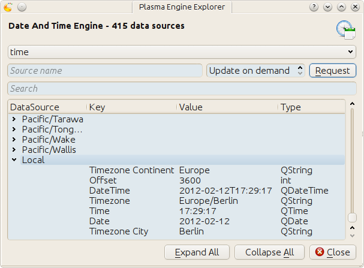

Digitize your TextMon :D
Table of Contents
1 Introduction
This guide aims to show you how to code a simple sytem minitor plasma applet in Javascript.
2 Hello Javascript
2.1 Install a Javascript interpreter
2.2 Not Ubuntu
2.2.1 js
This is Mozilla's command line Javascript interpreter. It's what I'll be using throughout this document, like
% js foobar.js
The package which contains this executable
- js
- for ArchLinux, OpenSUSE and Fedora
- spidermonkey-bin
- for Debian
It is not available on Ubuntu. You have to use one of the two following.
2.2.2 v8
The v8 package contains the d8 Javscript interpreter. When this documention says
% js foobar.js
then you can use
% d8 foobar.js
instead.
2.2.3 rhino
This is an Java implementation. It will take forever to startup the first time it runs, but after that it's ok. When this documention says
% js foobar.js
then you can use
% rhino foobar.js
instead.
Note: Only about Ubuntu I know for certain that it's rhino package includes
the /usr/bin/rhino shell script. On Archlinux you'd have to do
% java -jar /usr/share/java/js.jar foobar.js
2.3 Hello World
Open your favorite editor and create the file foobar.js with the content
print("Hello World!");
and run it in a shell
% js foobar.js Hello World!
3 Hello Plasma
3.1 And there was metadata
We aim to have plasma run our little world script.
print("hello world");
For this we have to create a plasma package. A package consists of its content, our Javascript file, and meta data that describes this content and its role. The file tree of the simplest possible package looks like this
hello_world ├── contents │ └── main.js └── metadata.desktop
The simplest possible and barely working meta data is
[Desktop Entry] Type=Service X-Plasma-API=javascript X-Plasma-MainScript=main.js
Now change to the directory hello_world, which contains the metadata.desktop
file, and execute
plasmoidviewer .
An empty default applet appears, since we haven't done anything to the user interface yet, and the text
hello world
appears in the shell where we started plasmoidviewer
Empty default applet
3.2 plasmapkg and life ain't easy
To make our applet be usable for plasma we have to install it. We'll install it into our user directory
% echo $(kde4-config --localprefix)
which will be something like /home/YOU/.kde or /home/YOU/.kde4, just paste
it into the shel and see for yourself. The follwing command does the
installation
% plasmapkg -i .
But it won't work. It fails with
plasmapkg(24248)/libplasma Plasma::Package::installPackage: Package plugin name not specified Installation of /home/maik/.../hello_world failed.
Okay, lets add a name. The name is provided by X-KDE-PluginInfo-Name
[Desktop Entry] Type=Service X-KDE-PluginInfo-Name=HelloFoobar X-Plasma-API=javascript X-Plasma-MainScript=main.js
Lets try again
% plasmapkg -i . Successfully installed /home/maik/Projekte/kde/plasmoids/javascript/textmon_tut/hello_world
Yay! Now we want to run it. Plasmoidviewer can to do that as well. Instead of giving a path to it, we give the name we've put into the meta data
% plasmoidviewer HelloFoobar
But it won't work, again. You get
Missing X-KDE-ServiceTypes
BUMMER! But wait, there is more fail to come. Before I explain what is missing, lets try to get rid if the faulty installation. You generally can remove plasma components with
% plasmapkg -r PACKAGENAME
But
% plasmapkg -r HelloFoobar
results in
Plugin HelloFoobar is not installed.
WAT? That is clearly not correct. It is a bug in plasmapkg that I'll report ASAP, I promise. I the mean time do this
% rm $(kde4-config --localprefix)/share/kde4/services/plasma-applet-HelloFoobar.desktop % rm $(kde4-config --localprefix)/share/apps/plasma/plasmoids/HelloFoobar/ -r
What we have to add is the role this Service named HelloFoobar plays. It's a plasma applet:
[Desktop Entry] Type=Service X-KDE-PluginInfo-Name=HelloFoobar X-KDE-ServiceTypes=Plasma/Applet X-Plasma-API=javascript X-Plasma-MainScript=main.js
No we not only get
% plasmapkg -i . Successfully installed /home/maik/Projekte/kde/plasmoids/javascript/textmon_tut/hello_world
but also
% plasmoidviewer HelloFoobar hello world
Yay :D
3.3 Give yourself a treat: Good error messages
Consider this code
array = [1, 2, 3];
and break it
foobar.js
array = [1, 2 3];
Put that into our main.js and see what plasma has to say
% plasmoidviwer .
We get this:
Syntax Error: Parse Error. This means: dunno!
Well ok, parsing a programming language is hard. I'm sure they done as good as anybody can ask for, right? Lets see what the contenders have to say. Here Mozilla's js
% js main.js main.js:1: SyntaxError: missing ] after element list: main.js:1: array = [1, 2 3]; main.js:1: ..............^
or Google's v8 (its command line debugger is called d8) :% d8 main.js
main.js:1: SyntaxError: Unexpected number
array = [1, 2 3];
^
SyntaxError: Unexpected number
or rhino, as well done by Mozilla
% rhino main.js js: "main.js", line 1: missing ] after element list js: array = [1, 2 3]; js: ...............^
Rhino is off by one dot, but still: wow!
A missing comma, brace and bracet is an frequent coding error. QtScript will give you the line number, that's it. If you have no idea what the heck it's problem is, do yourself a favor by pasting the code in question into file and have one of the above Javascript interpreters a run at it. They of cause won't be able to run it, but they'll find the syntax error with a sweet error message.
4 Hello?
4.1 Getting more than one shot
Our script is run exactly once! To get more than this single run, we have to convince plasma to give us additional cpu cycles. this is done by defining a data sink and connecting it to a source.
4.2 A sink with a slot
An object acts as the sink and a function as the slot that connects the source to the sink
var sink = { dataUpdated: function (name, data) { print("ping"); } };
The name of the sink Object can be anything
var CatDog = { dataUpdated: function (name, data) { print("ping"); } };
The name of the slot function however is to be dataUpdated. The function
always receives two parameters. We'll dicuss their content in a bit.
4.3 Connecting the slot to a source
A plasma engine provides sources. They're connected to via their
connectSource method. The arguments this method takes are the name of the
source, the sink object and the desired interval length in which sink's
dataUpdated slot should be called.
var engine = dataEngine("SourcesServingEngine") var intervalInMilliSeconds = 1000; // one second engine.connectSource("SourceOfInterest", sink, intervalInMilliSeconds);
This code has a flaw. The connection might fail of
- the source doesn't exist
- the sink object doesn't define the
dataUpdatedslot.
This flowing version doesn't really handle these situation, but at least tells us about it.
var engine = dataEngine("SourcesServingEngine") var intervalInMilliSeconds = 1000; // one second if (! engine.connectSource("SourceOfInterest", sink, intervalInMilliSeconds) ) { print("connection attempt to SourceOfInterest in SourcesServingEngine failed D:"); }
To actually find a data source and a source it provides we gonna use
% plasmaengineexplorer

Plasma engine explorer
In image plasmaengineexplorer the source Local of the time data engine is expanded. This code uses it
var sink = { dataUpdated: function (name, data) { print("ping"); } }; var engine = dataEngine("time"); if ( engine.connectSource("Local", sink, 1000) ) { print("connection established"); } else { print("connection attempt failed"); } print("main.js ends here");
and results in
ping connection established main.js ends here ping ping ping
As you can see, connectSource calls the dataUpdated slot. So make sure that it's already there. If not
var sink = {}; var engine = dataEngine("time"); if ( engine.connectSource("Local", sink, 1000) ) { print("connection established"); } else { print("connection attempt failed"); } sink.dataUpdated = function (name, data) { print("ping"); } print("main.js ends here");
we'll get
% plasmoidviewer . connection attempt failed main.js ends here %
4.4 Exploring a data source
So far it is only confirmed that dataUpdated was called back. Now we take a
look at the value of the parameters it is called with by the data engine.
First the name. This code for the sink section
var sink = { dataUpdated: function (name, data) { print(name); } };
results in
Local connection established main.js ends here Local Local ...
This is the same name we used with connectSource. This becomes important
when we subscribe to more than one data source.
var sink = { dataUpdated: function (name, data) { print(name); } }; var engine = dataEngine("time"); if ( engine.connectSource("Local", sink, 1000) ) { print("connection to 'Local' in 'time' established"); } else { print("connection attempt to 'Local' in 'time' failed"); } // if ( engine.connectSource("Europe/London", sink, 1000) ) { print("connection to 'Europe/London' in 'time' established"); } else { print("connection attempt to 'Europe/London' in 'time' failed"); } print("main.js ends here");
% plasmoidviewer . Local connection to 'Local' in 'time' established Europe/London connection to 'Europe/London' in 'time' established main.js ends here Local Europe/London Local Europe/Londo
Now the data. We're using the version that only connects to Local in
time with this slot definition
var sink = { dataUpdated: function (name, data) { print("===== data ====="); for(var k in data) { print("key : " + k); print("data[key] : " + data[k]); print("typeof data[key] : " + typeof data[k]); print("----"); } } };
It results in
===== data ===== key : Timezone Continent typeof data[key] : string data[key] : Europe ---- key : Offset typeof data[key] : number data[key] : 3600 ---- key : DateTime typeof data[key] : object data[key] : Sun Feb 12 2012 09:46:52 GMT+0100 (CET) ---- key : Timezone typeof data[key] : string data[key] : Europe/Berlin ---- key : Time typeof data[key] : object data[key] : 09:46:52 ---- key : Date typeof data[key] : object data[key] : Sun Feb 12 2012 00:00:00 GMT+0100 (CET) ---- key : Timezone City typeof data[key] : string data[key] : Berlin
The Offset looks off, doesn't it?. That's because its unit is seconds. My
time zone has an offset of
- \(3600\:s = \dfrac{3600\:s \cdot 1\:min}{60\:s} = 60\:min\)
- \(60\:min = \dfrac{60\:min \cdot 1\:h}{60\:min} = 1\:h\) .
If you compare this data with what is shown in plasmaengineexplorer, then you'll notice it being exactly the same, except for the actual point in time. For Qt data types that don't have an builtin equivalent in Javascript we get an object.
Lets have a peek into what one of these converted Qt types has to offer
var sink = { dataUpdated: function (name, data) { print("==== data ====="); var dateTime = data["DateTime"] print('<properties of data["DateTime"]'); for(var k in dateTime) { print("key : " + k); print('typeof dateTime[key] : ' + typeof dateTime[k]); print('dateTime[key] : ' + dateTime[k]); } print('</properties of data["DateTime"]'); } };
==== data ===== <properties of data["DateTime"] </properties of data["DateTime"]
Nothing? That is correct. This shell around an C++ object only hands out you a string representation of its value to Javascript. Though they are not showing up with the code above, these objects have the following methods
toString()toLocaleString()valueOf()hasOwnProperty(V)isPrototypeOf(V)propertyIsEnumerable(V)
The Qt docs just mention their existence
For real information head over to Mozilla
However, you probably only ever use toString().
var sink = { dataUpdated: function (name, data) { print("==== data ====="); var dateTime = data["DateTime"] print("typeof dateTime : " + typeof dateTime); print("typeof dateTime.toString : " + typeof dateTime.toString); print("typeof dateTime.toString() : " + typeof dateTime.toString()); print("dateTime.toString() : " + dateTime.toString()); } };
==== data ===== typeof dateTime : object typeof dateTime.toString : function typeof dateTime.toString() : string dateTime.toString() : Sun Feb 12 2012 11:45:39 GMT+0100 (CET)